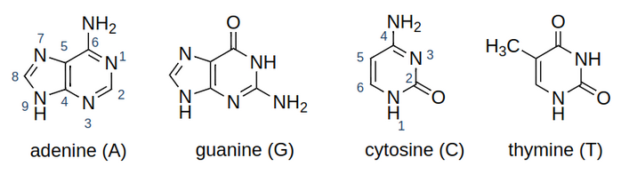
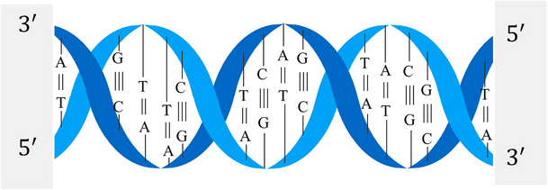
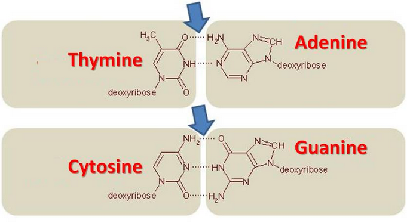
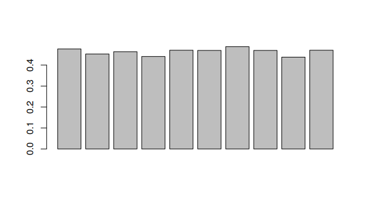
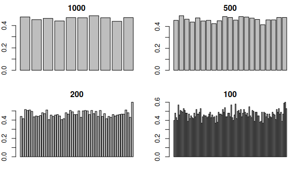
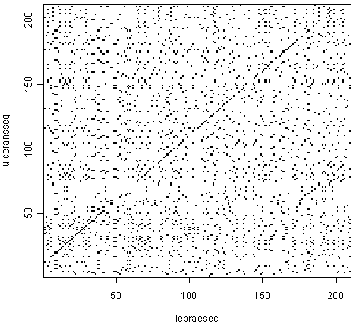
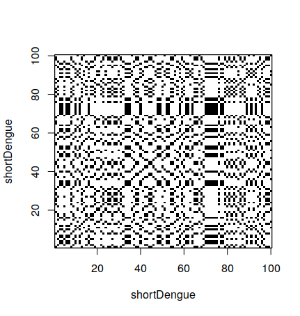
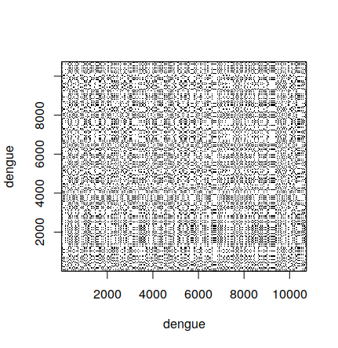
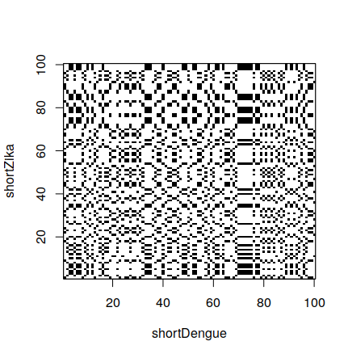
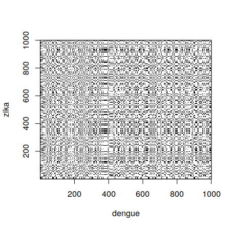

1.2 Comparing Gene Sequences
1 Context
1.1 Bases
DNA is composed of four bases adenine (A), guanine (G), cytosine (C) and thymine (T).
Bases match in the DNA in two pairs: G-C and A-T.

1.2 Bases sequences
DNA is a sequence of such bases. The bases of DNA determines the RNA it can encode, and therefore the proteins in can enduce production of.

1.3 Question
Given two sequences, how can we determine in which aspects they are different or similar?
Differences are simple to find, but not all of them determine functional differences.
In the same way, not all similarities we can find have biological meaning.
I will show some techniques that are used currently.
2 GC Content
2.1 Bonds
The A-T bond has two hydrogen bonds, while the G-C one has three. Often we write these bonds as A=T and G≡C to emphasize the difference.
The G-C bond is more thermostable and allows more stable stackings on the DNA strand.
DNA with low GC-content is less stable than DNA with high GC-content. Especially at high temperatures.

2.2 Calculation
The GC content is calculated as:
It can be measured by observing the melting temperature of the DNA double helix using spectrophotometry. The absorbance of DNA at a wavelength of 260 nm increases when the double-stranded DNA molecule separates into two single strands.
2.3 Calculating from sequence
GC content can be calculated directly from the gene sequence. It is enough to sum the amounts of G and C and divide by the total amount.
> dengue <- read.fasta("dengue.fasta")[[1]]
> c1 <- count(dengue,1)
> c1
a c g t
3426 2240 2770 2299
> (c1["c"] + c1["g"]) / sum(c1)
0.4666977 Threfore, the dengue sequence has around 47% of GC content.
2.4 Using seqinr
The library seqinr has a function that automatically calculates the GC content for any sequence.
> GC(dengue)
0.46669772.5 Selecting windows
Different parts of the DNA strand behave differently. It is useful to be able to select subparts of it. For example, to select the first 10 nucleotides:
> dengue[1:10]
[1] "a" "g" "t" "t" "g" "t" "t" "a" "g" "t"To select n nucleotides, starting from the position s, the operation to be used is dengue[s,(s+n-1)].
2.6 GC content in subsequences
The GC content on a sequence is not always the same depending on the place of the sequence.
We want to see the GC content on different nucleotide windows. For example, from the 1st to the 1000th, from the 1001st to the 2000th, etc… For this, we define a function:
windowGC <- function(data, window) {
starts <- seq(1,length(data)-window,by=window)
sapply(starts, function(start) {
range <- start:(start+window-1)
GC(data[range])
})
}2.7 GC content in subsequences
To calculate for windows of size 1000:
> windowGC(dengue,1000)
[1] 0.477 0.453 0.464 0.441 0.471 0.470 0.488 0.470 0.438 0.471
> barplot(windowGC(dengue,1000))
2.8 Different window sizes
The function above can be used to compare different window sizes. By decreasing the window size, we can see the GC content with more resolution:

Looking at this graph, what part of the DNA would break first when heating it?
3 Dot plots
3.1 What is a dot plot
A dot plot is a graphical method for comparing two biological sequences and identifying regions of close similarity after sequence alignment. It is one of the oldest techniquest for comparing base sequences.
The technique is the following. Build a graph with two axis, with one gene sequence in each axis. In the position (i,j) put a black dot if the base in the position i of the first sequence is the same as the base in the position j in the second sequence. Othewise, put a white dot.

3.2 How to make a dot plot
In R, is is possible to make a dot plot using the seqinr library. To do a dot plot for a small part of the dengue gene:
> shortDengue <- dengue[1:100]
> dotPlot(shortDengue,shortDengue)Why a small section? Dot plots are expensive to calculate. For 100 bases, one needs 10,000 operations. For 10,000 bases, one needs 100,000,000 operations. It grows very fast, so it can take a long time to calculate.

3.3 Comparing a sequence with itself
Diagonal black lines show parts of both sequences that are the same.
In this case, we are comparing a sequence to itself. Therefore, the main diagonal of the square is completely black. However, other diagonals can be seen in the graph. This means some chain is also happening elsewhere on the sequence.
What about the black block we see around the indexes 65 to 80? We can see it is a sequence of T’s.
> shortDengue[65:80]
[1] "a" "a" "c" "a" "g" "t" "t" "t" "t" "t" "t" "a" "t" "t" "a" "g"3.4 Comparing the full sequence
When comparing the full dengue sequence with itself, the result is the following. It took around 20 minutes to calculate in my computer, so it is not practical to do during classes.
It also shows another limitation of dot plots – when they are very large, it is difficult to interpret the result, since lines are difficult to see.

3.5 Comparing two sequences
Besides comparing a sequence with itself, we can compare two different sequences:
> shortZika <- zika[1:100]
> dotPlot(shortDengue,shortZika)
3.6 Comparing a larger sequence
A larger dot plot for comparing dengue and zika, using the first 1000 bases, is the following. As before, it took a long time to calculate, and it is not very easy to interpret.

3.7 Next
This is a preview of what we will do in the next lectures. We will calculate GC contents and dot plots using R and the gene sequences we already have.